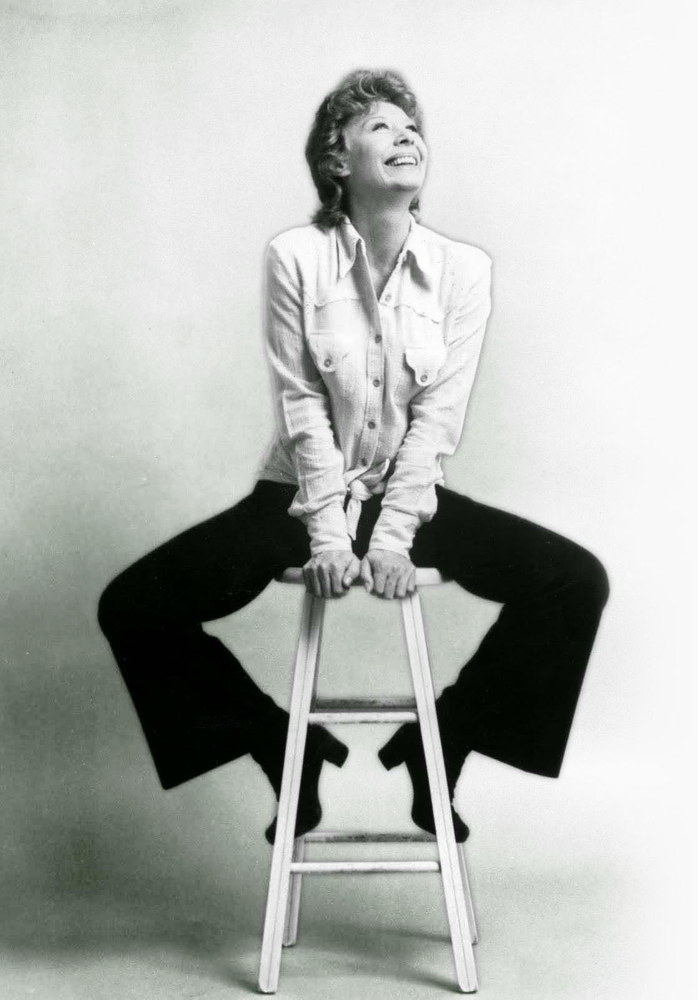

Gwyneth Evelyn "Gwen" Verdon
(January 13, 1925 – October 18, 2000)
was an American actress and dancer.
She won four Tony Awards for her musical comedy performances,
and served as an uncredited choreographer's assistant
and specialty dance coach for theater and film.
With flaming red hair and a quaver in her voice,
Verdon was a critically acclaimed performer on Broadway
in the 1950s, 1960s, and 1970s.